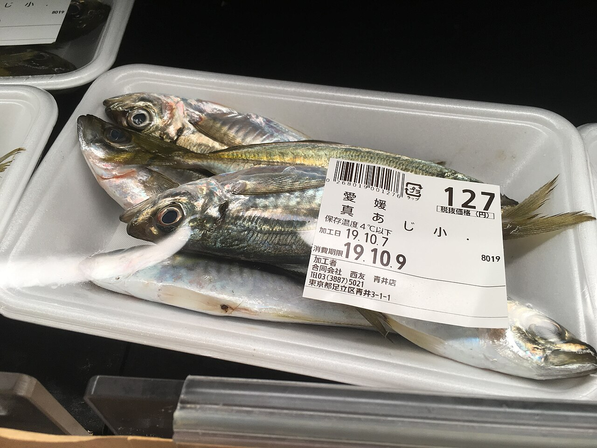
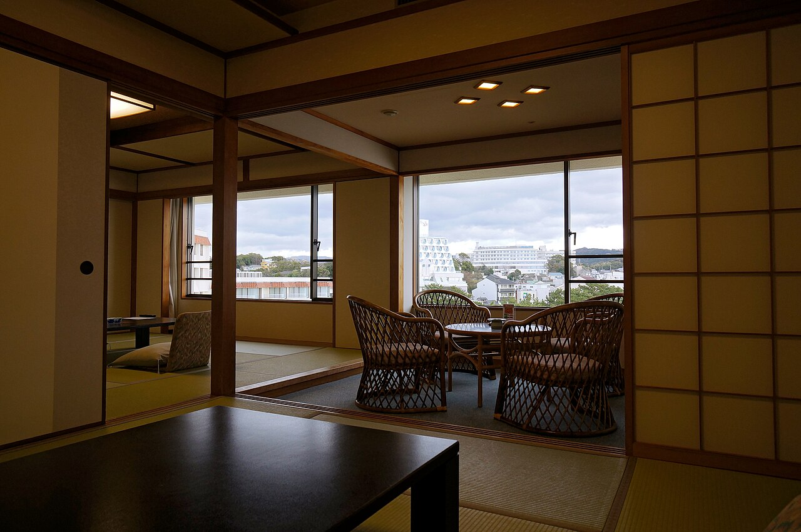
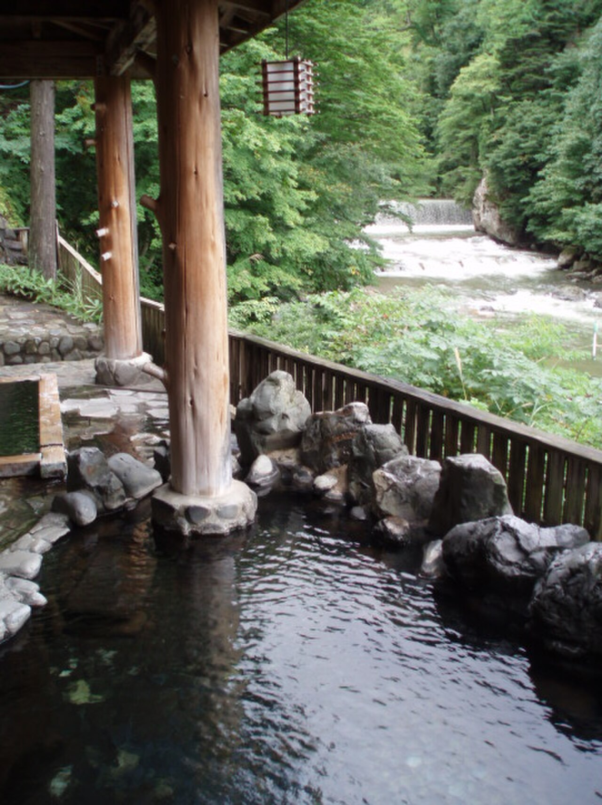
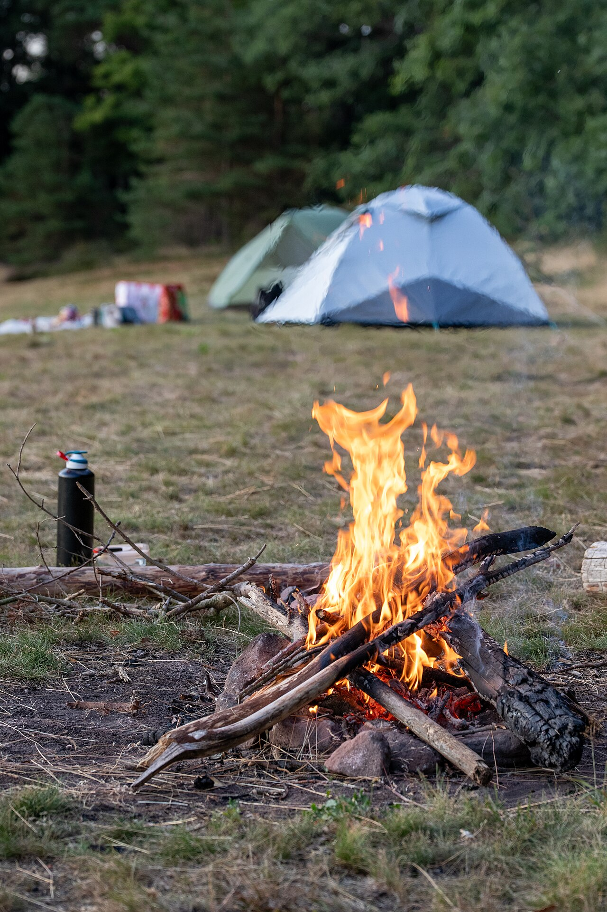
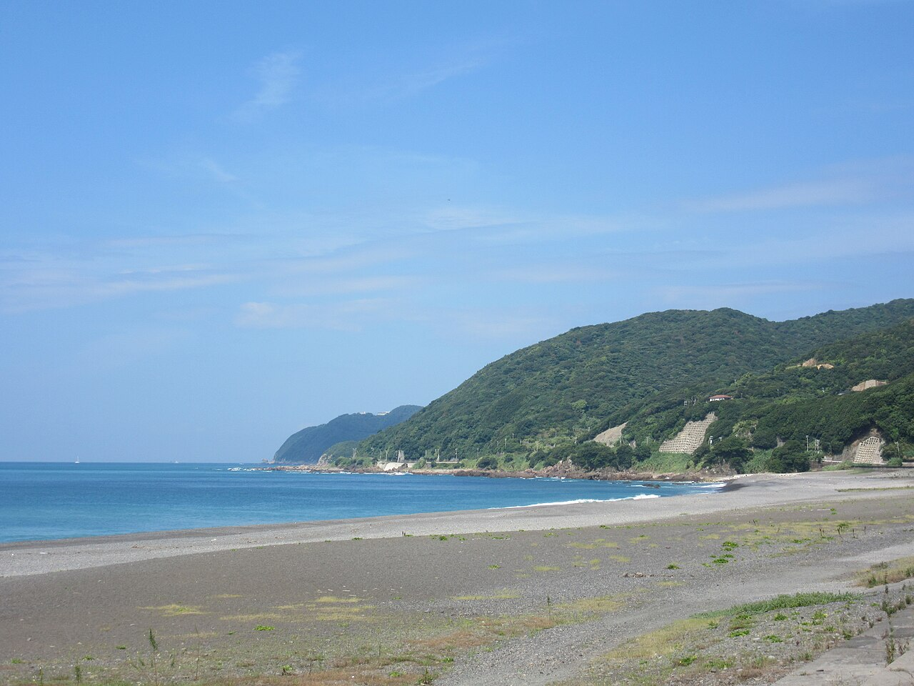
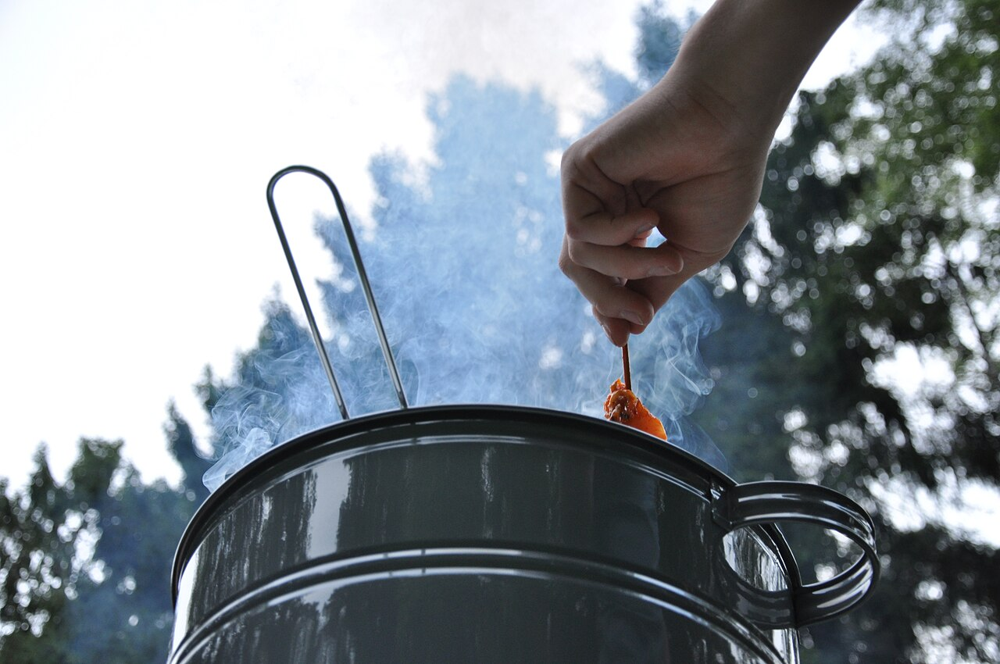
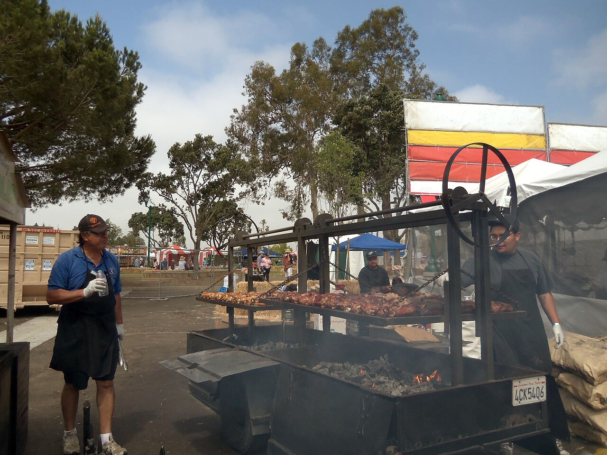

Overview
旅の概要
メイン
アジ釣り
宿泊
無料野営
目的地
熊野灘→月野瀬
温泉
大江戸温泉・串本
帰着
6/18 16時
Itinerary
日程表
Day 1 — 6月17日（土） 釣り → ランチ → 温泉 → BBQ → 焚き火
05:00
野田 出発
阪神高速・野田出入口 → 松原JCT → 阪和道 → 南紀田辺IC → 国道42号。コンビニとガソリンは出発前に済ませる。
08:30 〜 13:00
アジ釣り — 熊野灘（古座川河口）
黒潮の影響で年間通して安定釣果。2024〜2025年もサビキ・アジング実績多数。車を横づけできる護岸あり。
朝マズメ〜昼前が時合。コマセ多めで撒いて中層を狙う。釣ったアジは昼飯代わり・夜BBQの主役。
串本港も近隣の有力代替（赤灯台エリアは立入禁止・それ以外はOK）。
Googleマップで見る →


朝マズメ〜昼前が時合。コマセ多めで撒いて中層を狙う。釣ったアジは昼飯代わり・夜BBQの主役。
串本港も近隣の有力代替（赤灯台エリアは立入禁止・それ以外はOK）。
Googleマップで見る →

13:00 〜 13:45
ランチ — 串本のラーメン
釣り終わったらすぐ飯。串本市街で地元ラーメン。食べてからオークワで買い出し。
13:45
オークワ串本店で食材・つまみまとめ買い
国道42号沿い・24時間営業の南紀最大スーパー（串本町串本40-22）。鮮魚・肉・野菜・炭・ビール・つまみ全部揃う。古座川店でも最終補充OK（9〜22時）。釣り場から車15分。
15:00 〜 16:30
大江戸温泉物語 南紀串本 — 釣り後の汗を流す
熊野灘（古座川河口）から車15〜20分・串本駅徒歩圏。¥1,250・15:00〜23:00。露天＋内湯のリゾートホテル大浴場。シャンプー・タオル持参。
15時開館なので、オークワ買い出し後にちょうど合わせられる。
Googleマップで見る →

15時開館なので、オークワ買い出し後にちょうど合わせられる。
Googleマップで見る →


17:00
月野瀬リバーサイド 着 · テント設営
温泉から国道371号で古座川を遡る（車30〜40分）。古座川沿いの無料野営スポット。禁止看板なし・2025年ブログでも焚き火・テント泊の実績多数。ウォシュレットトイレあり。
※草地・駐車場はキャンプ禁止 → 川寄りの河原に設営。場所代¥0。
Googleマップで見る →

※草地・駐車場はキャンプ禁止 → 川寄りの河原に設営。場所代¥0。
Googleマップで見る →


18:00 〜 21:00
BBQ — 釣ったアジ塩焼き + 肉 + ビール
設営終わったら即炭起こし。朝釣ったアジをそのまま焼く。肉・野菜もぶち込んで飲む。



Day 2 — 6月18日（日） 撤収 → ランチ → 帰阪
07:00
起床 · 飯
ホットサンド・コーヒー・スープ等。前日に買ってあるやつを食う。
08:00 〜 09:00
撤収
テント・タープをたたんで積む。炭は完全消火。ゴミは全部持ち帰り。
09:00
帰路出発 — 国道42号で白浜・田辺経由
月野瀬から北上。白浜方面へ65km・1時間。
10:30 〜 12:00
ランチ — とれとれ市場（白浜）
水産物直売所・海鮮丼が安くて新鮮。昼からガッツリ食って帰る。
12:30
帰路 — 田辺IC → 阪和道 → 阪神高速 → 野田
渋滞なければ約1時間30分。日曜夕方は早めに出た方が安心。
14:00 〜 15:00
野田 着
メシ済みで帰着。解散。
Route
推奨ルート
Day 1 — 行き
野田
5:00発
阪和道 約3.5h
熊野灘
釣り 8:30〜13時
15min
オークワ串本
食材・つまみ
15min
大江戸温泉
15〜16:30
30min
月野瀬
BBQ→焚き火→就寝
Day 2 — 帰り
月野瀬
撤収 9:00
65km / 1h
とれとれ市場
ランチ
田辺IC→阪和道
野田
16時着
🛣️ 高速（土日ETC割）: 行き 野田→南紀田辺IC ¥3,270 / 帰り 田辺IC→野田 ¥3,270 / 往復計 ≈¥6,500 → 3人割 ≈¥2,167/人（要ETC確認）
Budget
予算目安（1人あたり）
| 項目 | 金額 | 備考 |
|---|---|---|
| 高速代（往復・休日ETC） | ¥2,167 | 車1台・3人割（南紀田辺IC往復） |
| ガソリン（往復） | ¥1,500〜2,000 | 3人割（総距離約650km） |
| 野営地（月野瀬リバーサイド） | ¥0 | 無料河原野営 |
| BBQ食材・飲み物・つまみ | ¥2,000〜2,500 | オークワ串本店で調達 |
| 温泉（大江戸温泉物語 南紀串本） | ¥1,250 | 15:00〜23:00・露天+内湯 |
| ランチ | ¥900〜1,500 | とれとれ市場・田辺食堂 |
| 雑費（コンビニ・朝食等） | ¥500〜800 | — |
| 合計 | ¥7,500〜9,700 | 1人あたり（3人割） |
Packing
持ち物チェックリスト
釣り道具
キャンプ用品
温泉・衛生用品
Notes
注意事項
梅雨シーズン · 古座川増水注意
6月は梅雨シーズン。古座川は山からの増水が速い。大雨予報があれば河原野営は即中止。古座川町役場（📞 0735-72-0180）で事前確認推奨。
雨天時プランB
小雨なら釣りは可能（合羽必須）。BBQはタープ下でいける。大雨・雷雨・増水注意報が出たら素直に中止。
野営マナー
ゴミ・燃え残り炭は全て持ち帰り。焚き火は完全消火してから就寝。来た時より美しく撤収。
釣りのコツ（アジ）
朝マズメ（5〜7時）と朝8〜10時が時合。サビキはコマセカゴ付き・針4〜5号。コマセ多めで撒くのが基本。